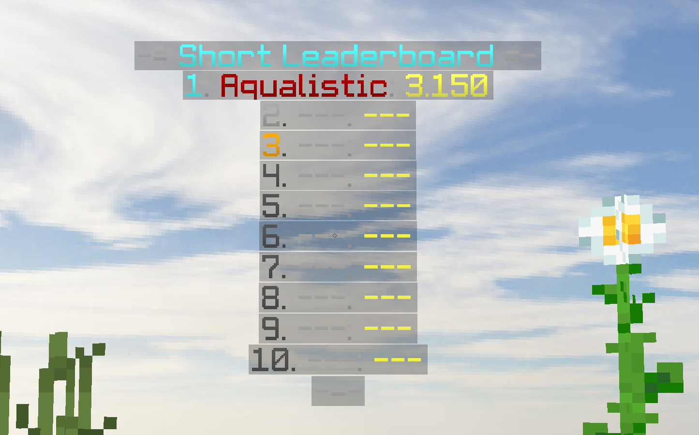
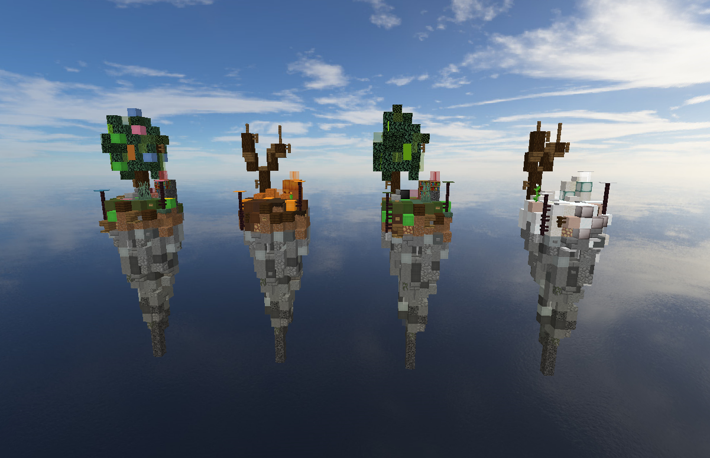

AquaBridge
Java Minecraft server with our own shot at what we would like FastBuilder to look like.
Server IP: AquaBridge.eu
Java Minecraft server with our own shot at what we would like FastBuilder to look like.
Server
AquaBridge.eu is a Java Minecraft server focused on a clean, simple, and competitive building experience. The goal is fast rounds, easy joining, and room to improve.
Information
AquaBridge.eu is our own take on what we would like FastBuilder to look like. We aim for a focused experience without unnecessary clutter.
The FastBuilder gamemode was originally invented on McPlayHD.net by McPlayHD and TROOP3R.
Media
Replace these with your own server screenshots later if you want.


Join
Open Minecraft Java Edition, go to Multiplayer, add a server, and paste the IP below.
Disclaimer
AquaBridge is not affiliated with Mojang Studios, Microsoft, or the original FastBuilder creators/platforms.